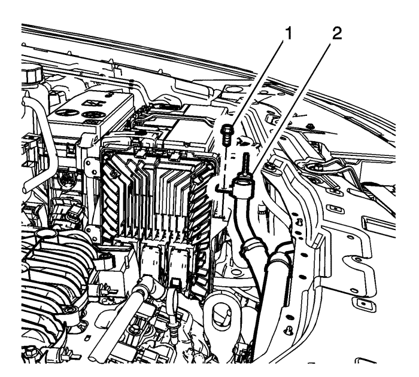
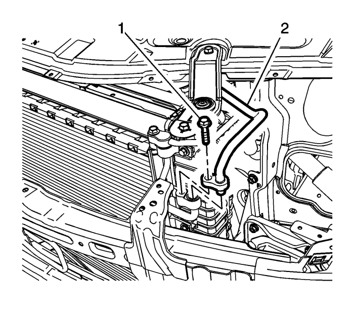
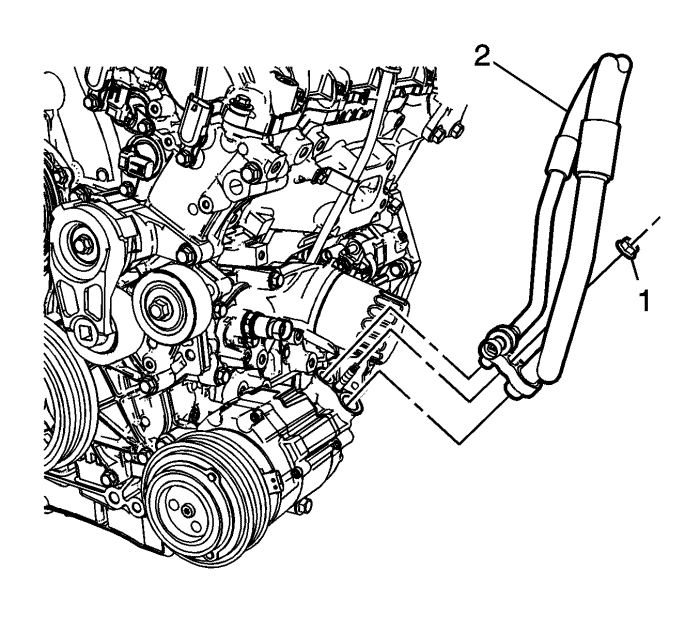

Sustitución del tubo flexible del compresor de aire acondicionado — V6
Herramientas especiales
J 39400-A Detector de fugas halógeno
Procedimientos de desmontaje
- Recubra el agente frigorífico. Consultar Recuperación y recarga del agente frigorífico .
- Desmonte el faro izquierdo. Consultar Sustitución de los faros : Carrocería larga → Carrocería corta .
- Desmontar el tubo flexible de salida del evaporador del tubo flexible del compresor del aire acondicionado. Consultar Sustitución del tubo flexible de salida del evaporador : V6 → Diesel → L4

- Desmontar el tornillo del tubo flexible del compresor (1) del aire acondicionado del soporte del módulo de control electrónico.
- Desmontar el tubo flexible del compresor (2) del aire acondicionado del soporte del módulo de control electrónico.

- Soltar el tubo flexible del compresor (1) del aire acondicionado del condensador.
- Desmontar el tubo flexible (2) del compresor del condensador.
- Elevar el vehículo y soportarlo de manera segura. Consultar Elevación del vehículo con un gato .

- Desconectar el conector eléctrico de la válvula del sensor de presión del refrigerante del aire acondicionado.
- Desmontar la tuerca (1) del tubo flexible del compresor.
- Desmontar el tubo flexible (2) del compresor.
- Desmontar el tubo flexible del compresor del vehículo.
- Desmontar y desechar las arandelas de estanqueidad del tubo flexible del compresor. Consultar Sustitución de la junta del sistema de aire acondicionado .
Procedimiento de montaje
- Montar las arandelas de estanqueidad nuevas en el tubo flexible del compresor. Consultar Sustitución de la junta del sistema de aire acondicionado .
- Montar el tubo flexible (2) del compresor en el compresor.
Precaución: Consulte Precaución con las fijaciones en la sección Prólogo.
- Montar la tuerca del tubo flexible del compresor (1) en el compresor y apretarla 22 N·m (16 lib. pie).
- Conectar el conector eléctrico de la válvula en el sensor de presión del refrigerante del aire acondicionado.
- Bajar el vehículo.
- Montar el tubo flexible (2) del compresor en el condensador.
- Montar el tornillo del tubo flexible del compresor (1) del aire acondicionado en el condensador y apretarlo 22 N·m (16 lib. pie).
- Montar el tubo flexible del compresor (2) del aire acondicionado en el soporte del módulo de control electrónico.
- Montar el tornillo del tubo flexible del compresor (1) del aire acondicionado en el soporte del módulo de control electrónico y apretarlo 20 N·m (15 lib. pie).
- Montar el tubo flexible de salida del evaporador en el tubo flexible del compresor del aire acondicionado. Consultar Sustitución del tubo flexible de salida del evaporador : V6 → Diesel → L4
- Monte el faro izquierdo. Consultar Sustitución de los faros : Carrocería larga → Carrocería corta .
- Recargue el sistema de A/A. Consultar Recuperación y recarga del agente frigorífico .
- Comprobar con J 39400-A si hay fugas en las juntas del A/A afectadas.
| © Copyright Chevrolet Europe. All rights reserved |